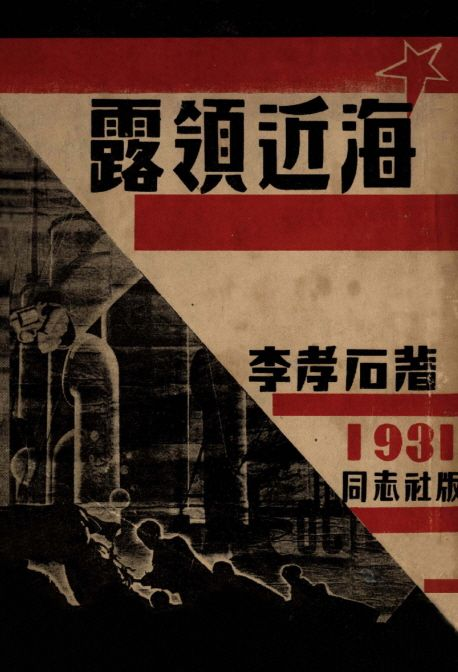

이효석 문화예술촌
전화 033-330-2700, 033-335-9669
팩스 033-335-2007
이메일 02hyoseok@naver.com
문학관 소개
소개
해마다 많은 사람들이 가산 이효석 작가가 태어나 자랐고, 『메밀꽃 필 무렵』의 배경지인 봉평을 찾았다. 그러나 봉평에는 이효석 선생의 문학세계를 한 눈에 보여줄 수 있는 곳이 없어 사람들은 아쉬운 마음을 가지고 돌아갔다. 이에 이효석 문학관을 건립하여 봉평을 찾은 사람들이 이효석 작가의 문학세계를 감상할 수 있는 공간을 마련하였다. 문화체육관광부가 주관한 2018평창동계올림픽 예술창작 특구사업의 일환으로 봉평면 창동4리 복원 이효석생가 주변에 '효석달빛언덕'이 2018년 8월 문을 열었다. 이 공간은 이효석의 「메밀꽃 필 무렵」에 등장하는 달빛의 상징성을 바탕으로 다양한 예술 체험이 가능한 공간이다. '효석달빛언덕'은 가운데를 흐르는 정겨운 도랑, 근사한 공연을 만날 수 있는 나귀광장, 그리고 봄부터 가을까지 손님을 맞이하는 메밀꽃으로 구성되어 있다. 그 모든 것이 찾는 이의 마음을 고요하고 아름답게 물들이는 곳이다.
전시자료
이효석의 생애와 문학세계를 시간의 흐름에 따라 볼 수 있도록 구성하였으며, 재현한 창작실, 옛 봉평장터 모형, 문학 교실에서는 이효석의 문학과 생애를 다룬 영상물 시청이 가능하다. 이효석 장남인 이우현씨가 기증한 이효석 연보와 이효석 작품연보를 감상할 수 있다. ‘자연인 이효석의 삶’에서는 가족관계나 호적과 거주지, 항상 뜨거운 감자로 떠오르는 이효석 고향에 대한 궁금증을 풀 수 있으며, 이효석의 풍모와 성격, 취향 여러 다양한 이효석의 삶의 방향을 접할 수 있다. ‘가산의 문학세계’를 통해 "초기 동반자 작가로서의 이효석 - 서울시절", "인간과 자연의 밤미 - 경성시절", "본격적인 순수의 문학으로 - 평양시절", 짧았던 새로운 문학의 세계", "사후-" 이렇게 다섯 개의 테마로 나뉘어져 있으며 관련된 원본 자료들을 접할 수 있다.
문학관 연혁
진행 프로그램

효석문화제
이효석 선생의 소설 메밀꽃 필 무렵의 배경에서 펼쳐지는 이번 효석문화제는 문화예술마당과 축제마당, 힐링마당 등 3개 구역으로 나누어 주제별로 다양한 체험 프로그램이 진행된다.
- 기간: 2025년 9월 5일 ~ 9월 14일
- 참가비: 무료
개관 정보
5월~9월: 09:00 ~ 18:30 / 10월~4월: 09:00 ~ 17:30
휴관일: 매주 월요일, 1월 1일, 설날, 추석, 월요일이 공휴일인 경우 다음날
위치
찾아가는 길
- 강원도 평창군 봉평면 효석문학길 73-25 이효석 문화예술촌버스터미널 - 원주행버스 - 원주 시외버스터미널 - 장평행버스 - 장평터미널 - 봉평(시내버스, 택시이용)

메밀꽃 필 무렵
작품은 사회의식을 배제하고, '달밤'과 '메밀꽃밭' 같은 자연을 통해 등장인물인 장돌뱅이 '허생원'의 애틋한 사랑과 그리움, 그리고 그가 아들임을 알게 되는 과정을 서정적으로 그려낸다.

화분
관능적인 쾌락 그 자체의 가능성을 질문함으로써, 한국 근대문학에서 쉽게 찾아볼 수 없는 성적 모더니티를 제기한 작품이다. 또한 제국 내 지방과 제국 밖 세계라는 인식 속에서, 제국의 지리적·문화적 경계를 넘어 세계 속에 자기를 위치시키려고 한 식민지 조선 지식인의 욕망을 확인할 수 있는 작품이다.
노령근해
식민지 시기 사회주의 사상의 영향을 받은 '동반자 작가' 시절의 초기 작품으로, 사회주의 경향과 도시 빈민층의 소외를 주제로 다룹니다. 이 작품은 동해안의 항구를 떠나 연해주로 향하는 여객선 내부를 배경으로, 당시 사회 현실을 반영하고 있다.